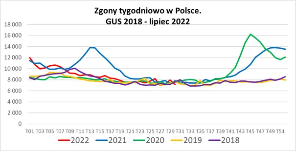

Korea Północna liderem racjonalizmu ?
Od dziewiątego tygodnia w roku 2022 (koniec lutego) poziom zgonów w Polsce wrócił do normy i utrzymuje się (dane do końca lipca 2022) na typowym poziomie. Tempo wydarzeń zaciera naszą pamięć i postanowiłem zajrzeć do liczb z przeszłości. Pamiętajmy, że w tym czasie, pod koniec lutego, po prostu z dnia na dzień temat ustąpił miejsca wojnie, przestano testować, liczyć ofiary, itp.

Warto przypomnieć, że na początku sierpnia w Korei Północnej ogłoszono ostateczne zwycięstwo z epidemią i zakończenie wszelkich środków zapobiegawczych. Rozbawił mnie ten komunikat, bo oto światowy szur nr 1 jako pierwszy zaczyna mówić ludzkim głosem. W mojej ocenie jest to chiński sygnał w skomplikowanej grze miedzy Azją i „Zachodem”, swoisty bal maskowy, gdzie amerykańscy politycy na Tajwanie epatują maseczkami Azjatów. Ten sam obrazek w naszych mediach wygląda zabawnie, bo od lutego miejsce maseczek zastąpiły czołgi itp.
Dla zainteresowanych szczegółami wzrostów w latach 2020 i 2021 : https://pawelklimczewski.pl/2022/02/09/nie-bylo-fali-pierwszej-nie-bylo-drugiej-nie-bylo-zadnej-fali/
Paweł Klimczewski